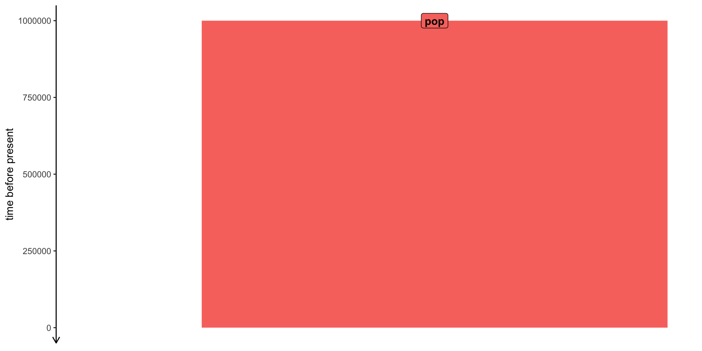
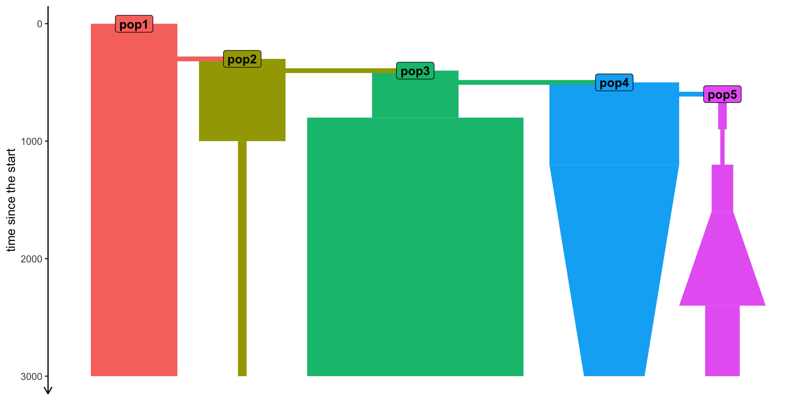
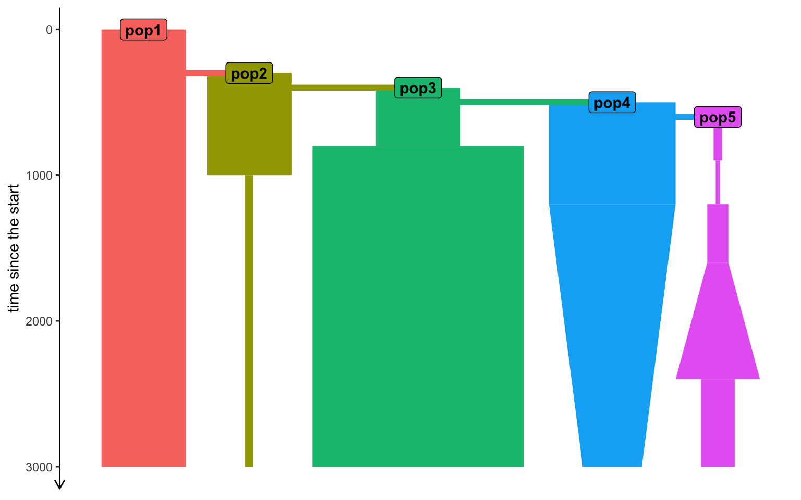
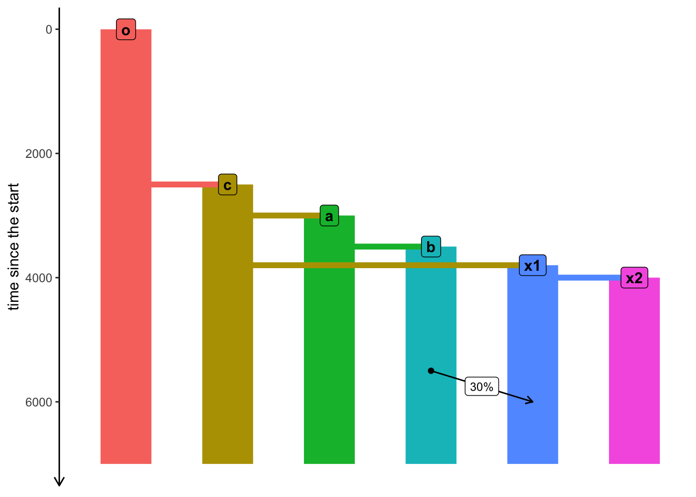
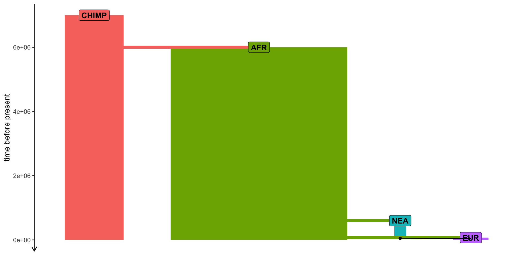

initialize() {
// create a neutral mutation type
initializeMutationType("m1", 0.5, "f", 0.0);
// initialize 1Mb segment
initializeGenomicElementType("g1", m1, 1.0);
initializeGenomicElement(g1, 0, 999999);
// set mutation rate and recombination rate of the segment
initializeMutationRate(1e-8);
initializeRecombinationRate(1e-8);
}
// create an ancestral population p1 of 10000 diploid individuals
1 early() { sim.addSubpop("p1", 10000); }
// in generation 1000, create two daughter populations p2 and p3
1000 early() {
sim.addSubpopSplit("p2", 5000, p1);
sim.addSubpopSplit("p3", 1000, p1);
}
// in generation 10000, stop the simulation and save 100 individuals
// from p2 and p3 to a VCF file
10000 late() {
p2_subset = sample(p2.individuals, 100);
p3_subset = sample(p3.individuals, 100);
c(p2_subset, p3_subset).genomes.outputVCF("/tmp/slim_output.vcf.gz");
sim.simulationFinished();
catn("DONE!");
}slendr simulations
practical workshop at MPI EVA Leipzig
Martin Petr
February 2023
Many problems in population genetics cannot be solved by a mathematician, no matter how gifted. [It] is already clear that computer methods are very powerful. This is good. It […] permits people with limited mathematical knowledge to work on important problems […]
Why use simulations?
- Making sense of estimated statistics
- Fitting model parameters
- Ground truth for method work
Making sense of estimated statistics

Making sense of estimated statistics
Making sense of estimated statistics

Fitting model parameters (i.e. ABC)

Ground truth for methods work

There are many simulation tools
The most famous and widely used are SLiM and msprime.
Both are very powerful…
… but they require a lot of programming knowledge...
… and a lot of code for non-trivial simulations (🐛🪲🐜).
a convenient R interface to both SLiM and msprime.
SLiM
What is SLiM?
- Forward-time simulator
- It’s fully programmable!
- Massive library of functions for:
- Demographic events
- Various mating systems
- Selection, quantitative traits, …
- > 700 pages long manual!

SLiMgui – IDE for SLiM

Simple neutral simulation in SLiM
msprime
What is msprime?
What is msprime?
- A Python module for writing coalescent simulations
- Extremely fast (genome-scale, population-scale data)
- You must know Python fairly well to build complex models

Simple simulation using msprime
This is basically the same model as the SLiM script earlier:
import msprime
demography = msprime.Demography()
demography.add_population(name="A", initial_size=10_000)
demography.add_population(name="B", initial_size=5_000)
demography.add_population(name="C", initial_size=1_000)
demography.add_population_split(time=1000, derived=["A", "B"], ancestral="C")
ts = msprime.sim_ancestry(
sequence_length=10e6,
recombination_rate=1e-8,
samples={"A": 100, "B": 100},
demography=demography
)
www.slendr.net
Why a new package? – spatial simulations!

Why a new package?
Most researchers are not expert programmers
All but the most trivial simulations require lots of code
90%
of simulations are basically the same! create populations (splits and \(N_e\) changes)
specify if/how they should mix (rates and times)
save output (VCF, EIGENSTRAT)
- Lot of code duplication across projects
Let’s get started
We will need slendr & tidyverse
(ignore the message about missing SLiM)
slendr haiku
Build simple models,
simulate data from them.
Just one plain R script.
Typical steps (outline of this tutorial)
- creating populations
- scheduling population splits
- programming \(N_e\) size changes
- encoding gene-flow events
- simulation sequence of a given size
- computing statistics from simulated outputs
Creating a population()
Each needs a name, size and time of appearance (i.e., “split”):
Programming population splits
Splits are indicated by the parent = <pop> argument:
Scheduling resize events – resize()
Step size decrease:
Tidyverse-style pipe %>% interface
A more concise way to express the same thing as before.
Step size decrease:
Exponential increase:
A more complex model
pop1 <- population("pop1", N = 1000, time = 1)
pop2 <-
population("pop2", N = 1000, time = 300, parent = pop1) %>%
resize(N = 100, how = "step", time = 1000)
pop3 <-
population("pop3", N = 1000, time = 400, parent = pop2) %>%
resize(N = 2500, how = "step", time = 800)
pop4 <-
population("pop4", N = 1500, time = 500, parent = pop3) %>%
resize(N = 700, how = "exponential", time = 1200, end = 2000)
pop5 <-
population("pop5", N = 100, time = 600, parent = pop4) %>%
resize(N = 50, how = "step", time = 900) %>%
resize(N = 250, how = "step", time = 1200) %>%
resize(N = 1000, how = "exponential", time = 1600, end = 2200) %>%
resize(N = 400, how = "step", time = 2400)Remember that slendr objects internally carry their whole history!
slendr 'population' object
--------------------------
name: pop5
non-spatial population
stays until the end of the simulation
population history overview:
- time 600: split from pop4 (N = 100)
- time 900: resize from 100 to 50 individuals
- time 1200: resize from 50 to 250 individuals
- time 1600-2200: exponential resize from 250 to 1000 individuals
- time 2400: resize from 1000 to 400 individualsLast step before simulation: compile_model()
Model summary
Typing the compiled model into R prints a brief summary:
slendr 'model' object
---------------------
populations: pop1, pop2, pop3, pop4, pop5
geneflow events: [no geneflow]
generation time: 1
time direction: forward
total running length: 3000 model time units
model type: non-spatial
configuration files in: /private/var/folders/d_/hblb15pd3b94rg0v35920wd80000gn/T/Rtmpvbn57i/file8cb5347bbaa3 Model visualization

Exercise #1
Exercise #1 — write your own model!

Exercise #1 — solution
Simulating data (finally…)
We have a compiled model, how do we simulate data?
slendr has two built-in simulation engines:
- SLiM engine
- msprime engine
You don’t have to write any msprime or SLiM code!
The output of a slendr simulation is a tree sequence
What is tree sequence?

- a record of full genetic ancestry of a set of samples
- an encoding of DNA sequence carried by those samples
- an efficient analysis framework
Why tree sequence?
Why not VCF, EIGENSTRAT, or a genotype table?
What we usually have

What we usually want
(As full as possible) a representation of our samples’ history:
Here is the magic
Tree sequences make it possible to directly compute many quantities of interest without going via conversion to a genotype table/VCF!
We don’t even need mutations!
╔═══════════════════════════╗
║TreeSequence ║
╠═══════════════╤═══════════╣
║Trees │ 1419║
╟───────────────┼───────────╢
║Sequence Length│ 1000000║
╟───────────────┼───────────╢
║Time Units │generations║
╟───────────────┼───────────╢
║Sample Nodes │ 9400║
╟───────────────┼───────────╢
║Total Size │ 1.6 MiB║
╚═══════════════╧═══════════╝
╔═══════════╤═════╤═════════╤════════════╗
║Table │Rows │Size │Has Metadata║
╠═══════════╪═════╪═════════╪════════════╣
║Edges │24314│759.8 KiB│ No║
╟───────────┼─────┼─────────┼────────────╢
║Individuals│ 4700│128.5 KiB│ No║
╟───────────┼─────┼─────────┼────────────╢
║Migrations │ 0│ 8 Bytes│ No║
╟───────────┼─────┼─────────┼────────────╢
║Mutations │ 0│ 16 Bytes│ No║
╟───────────┼─────┼─────────┼────────────╢
║Nodes │19959│545.8 KiB│ No║
╟───────────┼─────┼─────────┼────────────╢
║Populations│ 5│383 Bytes│ Yes║
╟───────────┼─────┼─────────┼────────────╢
║Provenances│ 1│ 3.8 KiB│ No║
╟───────────┼─────┼─────────┼────────────╢
║Sites │ 0│ 16 Bytes│ No║
╚═══════════╧═════╧═════════╧════════════╝How can we compute statistics?
There is a duality between mutations and branch lengths in trees (more here).
But what if we want mutations?
Coalescent and mutation processes can be decoupled
This means we can add mutations
after the simulation.
This allows efficient, massive simulations
If we have a simulated ts object, we can do:
Or, with a shortcut:
ts_mutate() throughout.
Tree sequences are also very efficient
Let’s take this minimalistic model:
(simulates 2 \(\times\) 10000 chromosomes of 100 Mb)
Runs in less than 30 seconds on my laptop!
Taking about 66 Mb of memory!
How does this work?!

Tree-sequence tables (tskit docs)
A tree (sequence) can be represented by
- a table of nodes,
- a table of edges between nodes,
- a table of mutations on edges

A set of such tables is a tree sequence.
Tree-sequence tables in practice

nodes:
node_id pop_id time
1 88 0 -348.38998
2 85 0 -19.46493
3 73 0 235.58011edges:
child_node_id parent_node_id
1 85 88
2 73 85
3 53 88mutations:
[1] id site node time
<0 rows> (or 0-length row.names)Let’s take the model we defined earlier…
… and simulate tree sequence from it
ts_save().)
What can we do with it?
slendr’s R interface to tskit

This R interface links to Python methods implemented in tskit.
Extracting sample information
Each “sampled” individual in slendr has a symbolic name, a sampling time, and a population assignment.
Extracting sample information
If we have a tree sequence ts, we can get samples with ts_samples():
# A tibble: 4,700 × 3
name time pop
<chr> <dbl> <chr>
1 pop1_1 0 pop1
2 pop1_2 0 pop1
3 pop1_3 0 pop1
4 pop1_4 0 pop1
5 pop1_5 0 pop1
6 pop1_6 0 pop1
7 pop1_7 0 pop1
8 pop1_8 0 pop1
9 pop1_9 0 pop1
10 pop1_10 0 pop1
# … with 4,690 more rows
Analyzing tree sequences with slendr
Let’s say we have the following model and we simulate a tree sequence from it.
Example: allele frequency spectrum
[1] "pop_2369" "pop_5273" "pop_9290" "pop_1252" "pop_8826"
Exercise #2
Exercise #2 — estimating \(N_e\) from AFS
You sequenced 10 individuals from one population and computed this AFS (counts of singletons, doubletons, …):
You know from fossil evidence that the population had constant \(N_e\) for the past 100,000 generations, and that the \(N_e\) was somewhere between 1000 and 30000.
Use slendr to guess the true value of \(N_e\) given the observed AFS by running single-population simulations of different \(N_e\) and comparing ts_afs() results to afs_observed.
Exercise #2 – hints
Write an R function (in a new script) that gets \(N_e\) as input, creates a slendr population, compiles a model, simulates a tree sequence, runs
ts_afs()on it, and returns the AFS.Find the \(N_e\) value that will give the closest AFS to the observed one. For instance, you could:
a ) Plot simulated AFS for different \(N_e\) with the AFS and just eyeball \(N_e\) value that looks correct from a graph.
b ) Simulate AFS automatically in steps of possible \(N_e\) values and find the closest matching one.
Exercise #2 solution (a) – eye-balling
Exercise #2 solution (b) – grid
Gene flow / admixture
gene_flow() events
Gene flow is programmed the gene_flow() function.
If we have populations p1 and p2, we schedule gene flow with:
Multiple gene-flow events can be gathered in a list:
gene_flow() checks for consistency!
Plugging gene flow(s) into the model
Exercise #3
Exercise #3 — adding gene_flow()
Add Neanderthal introgression into your model from Exercise #1 (let’s say 3% pulse NEA -> EUR at 55 kya).

Exercise #3 — adding gene_flow()
Add Neanderthal introgression into your model from Exercise #1 (let’s say 3% pulse NEA -> EUR at 55 kya).
Exercise #3 — solution
Exercise #4
Exercise #4 — popgen statistics

Exercise #4 — popgen statistics
Compute nucleotide diversity (\(\pi\)) in each population (ts_diversity()). Do your results with known \(N_e\) values?
Compute ts_divergence() (genetic divergence) or ts_fst() (\(F_{ST}\)) between populations. Do the results match the model?
Compute the “outgroup \(f_3\)” using CHIMP as the outgroup (ts_f3()) for different pairs of “A” and “B” populations.
Test Neanderthal introgression in EUR using the \(f_4\) statistic (ts_f4()). [hint: \(f_4\)(AFR, EUR; NEAND, CHIMP)]
Exercise #4 — popgen statistics
A useful R trick for handling recorded samples:
Exercise #4 — solution
Time-series data
Sampling aDNA samples through time
Imagine we have pop1, pop2, … compiled in a model.
To record ancient individuals in the tree sequence, we can use schedule_sampling() like this:
Sampling schedule format
The output of schedule_sampling() is a plain data frame:
# A tibble: 4 × 7
time pop n y_orig x_orig y x
<int> <chr> <int> <lgl> <lgl> <lgl> <lgl>
1 10000 EUR 1 NA NA NA NA
2 20000 EUR 1 NA NA NA NA
3 30000 EUR 1 NA NA NA NA
4 40000 EUR 1 NA NA NA NA How to use a sampling schedule?
To sample individuals based on a given schedule, we use the samples = argument of the msprime() functions:
We can verify that only specific individuals are recorded:
╔═══════════════════════════╗
║TreeSequence ║
╠═══════════════╤═══════════╣
║Trees │ 1210║
╟───────────────┼───────────╢
║Sequence Length│ 1000000║
╟───────────────┼───────────╢
║Time Units │generations║
╟───────────────┼───────────╢
║Sample Nodes │ 12║
╟───────────────┼───────────╢
║Total Size │ 266.6 KiB║
╚═══════════════╧═══════════╝
╔═══════════╤════╤═════════╤════════════╗
║Table │Rows│Size │Has Metadata║
╠═══════════╪════╪═════════╪════════════╣
║Edges │3708│115.9 KiB│ No║
╟───────────┼────┼─────────┼────────────╢
║Individuals│ 6│192 Bytes│ No║
╟───────────┼────┼─────────┼────────────╢
║Migrations │ 0│ 8 Bytes│ No║
╟───────────┼────┼─────────┼────────────╢
║Mutations │1547│ 55.9 KiB│ No║
╟───────────┼────┼─────────┼────────────╢
║Nodes │ 858│ 23.5 KiB│ No║
╟───────────┼────┼─────────┼────────────╢
║Populations│ 4│341 Bytes│ Yes║
╟───────────┼────┼─────────┼────────────╢
║Provenances│ 2│ 3.5 KiB│ No║
╟───────────┼────┼─────────┼────────────╢
║Sites │1547│ 37.8 KiB│ No║
╚═══════════╧════╧═════════╧════════════╝Exercise #5
Exercise #5a — ancient samples
Exercise #5a — ancient samples
Simulate data from your model using this sampling:
- one present-day CHIMP and AFR individual
- 20 present-day EUR individuals
- 1 NEA at 70 ky, 1 NEA at 40 ky
- 1 EUR every 1000 years between 50-5 kya
Reminder: you can do this by:
Exercise #5b — \(f_4\)-ratio statistic
Use \(f_4\)-ratio statistic to replicate the following figure:
Exercise #5 — solution
More information
slendr paper on bioRxiv
Documentation, tutorials can be found here
GitHub repo (bug reports!) is here
- new R package for ABC modeling demografr